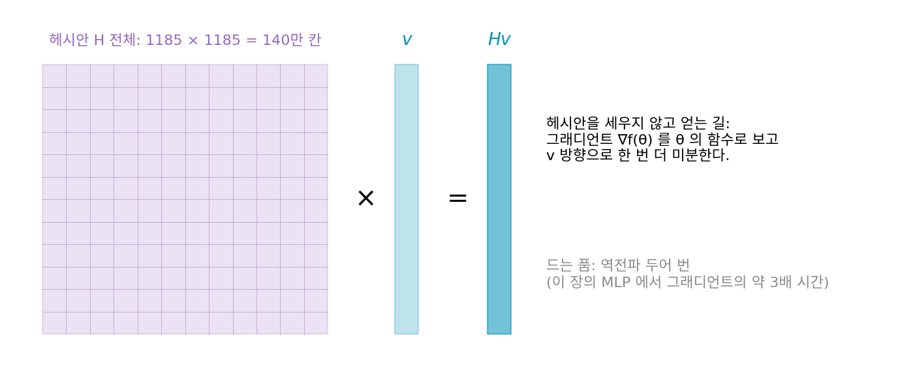
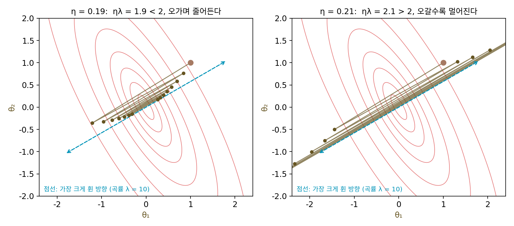
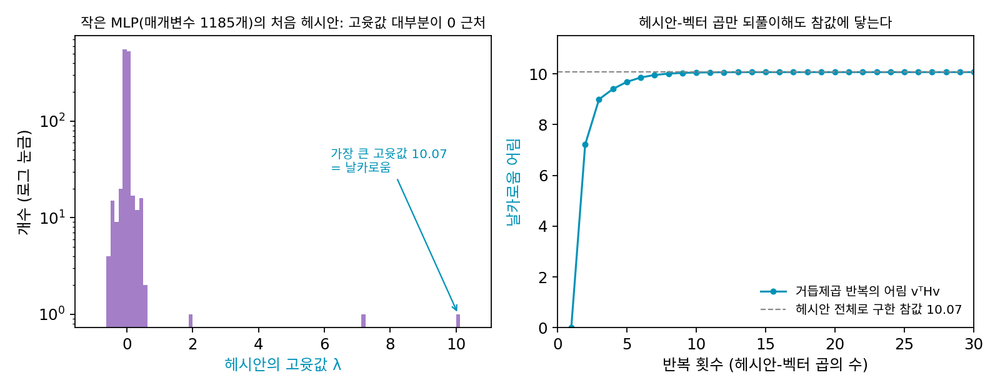
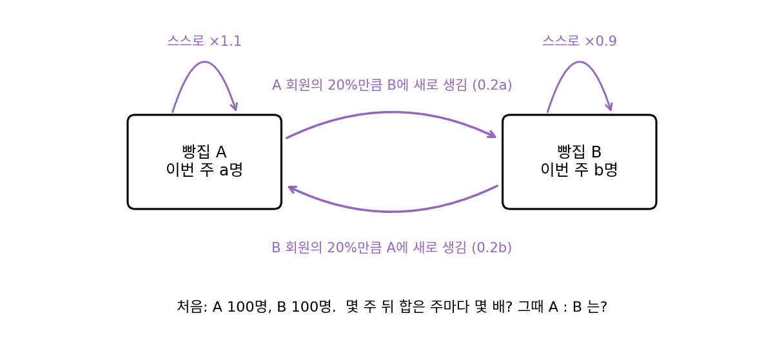
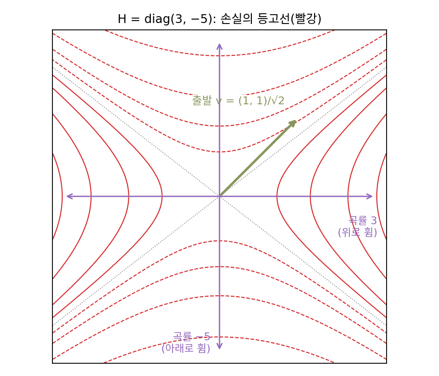
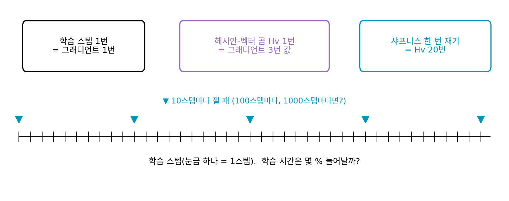

샤프니스: 안정성의 가장자리
이 장의 물음
경사하강을 처음 배울 때 학습률의 상한이라는 약속을 만났다. 손실이 어디서나 곡률 L 이하로만 휘어 있으면, 학습률을 2/L보다 작게 잡는 한 손실은 스텝마다 준다. 그 너머에서는 가장 가파르게 휜 방향을 따라 양쪽 벽을 오가며 점점 멀어지는데, 포물선에서는 이 경계가 그대로 맞았다.
그런데 신경망을 학습시켜 본 사람은 이 약속을 손에 들고도 막막하다. 신경망의 손실에는 「어디서나 L 이하」라는 상한이 없고, 파라미터가 움직이면 손실의 곡률도 함께 바뀌기 때문이다. 그래서 실무에서는 학습률을 몇 개 돌려 보고 터지지 않는 것 가운데 큰 값을 고른다. 그렇게 고른 학습률로 학습하면 손실이 대체로 내려가지만, 곡선을 확대해 보면 한 스텝씩은 오르내리고 가끔은 크게 튀었다가 다시 내려온다. 2/L보다 작은 학습률이면 손실은 스텝마다 줄어야 했으니, 손실이 오른다는 것은 학습률이 이미 그 경계를 넘었다는 뜻일까? 그렇다면 왜 터지지 않을까?
큰 모델을 학습시키는 팀들은 학습 초반에 학습률을 0 근처에서 시작해 정해 둔 목표 학습률까지 천천히 올린다. 처음부터 목표 학습률을 쓰면 몇 스텝 만에 터지는데, 천천히 올리면 같은 값으로 끝까지 학습된다. 똑같은 학습률이 언제 쓰느냐에 따라 터지기도 하고 안 터지기도 한다.
이 장은 다음 물음에 차례로 답한다.
- 손실이 지금 자리에서 가장 가파르게 휜 방향의 곡률은 어떻게 잴까? 파라미터가 수백만 개여서 2차 편미분 표 전체를 만들 수 없을 때는?
- 학습하는 동안 그 곡률은 어떻게 움직일까? 학습률의 경계를 넘으면 무슨 일이 생길까?
- 손실의 바닥(극소)이 여럿일 때, 학습률이 어느 바닥에 내려앉을지를 정할까?
- 손실의 바닥이 얼마나 넓고 평평한지를 학습의 목표로 직접 삼을 수 있을까?
샤프니스: 헤시안의 가장 큰 고윳값
학습률의 상한 2/L은 손실이 어디서나 곡률 L 이하라는 보장에서 나왔다. 그런데 곡률이 끝없이 커지는 손실 w⁴/4에서는 어떤 학습률 η를 골라도 √(2/η)보다 먼 곳에서 출발하면 터졌다. 스텝을 정한 것은 출발점에서 바닥까지 사이의 곡률이었기 때문에, 그런 보장이 없는 손실에서는 학습률 하나로 모든 출발점을 지킬 수 없다. 그렇다면 「어디서나」를 버리고 「지금 이 자리」의 곡률을 재면 되지 않을까? 파라미터가 하나면 2차 미분 하나를 재면 되지만, 파라미터가 여럿이면 방향마다 곡률이 다르고 그 가운데 가장 가파르게 휜 방향의 곡률이 학습률의 벼랑을 정할 것이다. 그 곡률은 2차 편미분을 모두 모은 표, 곧 헤시안(2차 편미분을 모은 행렬)에 들어 있다. 문제는 파라미터가 1억 개면 헤시안의 칸이 10¹⁶개라는 것인데, 표를 만들지 않고 가장 가파른 곡률만 꺼낼 수는 없을까?
역사: 헤시안을 만들지 않고 헤시안을 곱하다
1990년대 초 신경망 연구자들은 2차 미분 정보를 쓰고 싶어 했다. 뉴턴법처럼 휨을 알면 스텝을 더 잘 고를 수 있고, 학습이 끝난 신경망에서 어느 가중치를 지워도 되는지도 2차 미분으로 가늠할 수 있었다. 걸림돌은 크기였다. 가중치가 n개면 헤시안의 칸은 n²개이고, 칸을 하나씩 계산하면 역전파를 n번 돌려야 한다. 그래서 대각선 칸만 쓰거나 다른 근사로 바꿔 쓰는 방법들이 나왔다.
지멘스 연구소에 있던 바락 펄머터(Barak Pearlmutter)는 1993년에 돌린 원고를 1994년 『뉴럴 컴퓨테이션(Neural Computation)』에 「헤시안을 빠르고 정확하게 곱하기(Fast Exact Multiplication by the Hessian)」로 실었다. 그가 보인 것은, 헤시안 H 자체는 만들지 않으면서 아무 벡터 v에 대한 곱 Hv는 근사 없이, 그것도 그래디언트를 한 번 구하는 것과 비슷한 계산량으로 얻을 수 있다는 것이다. 그래디언트를 계산하는 식 전체에 「v 방향으로 조금 움직였을 때의 변화」를 재는 미분을 한 번 더 걸면 된다. 펄머터는 이 곱만 있으면 헤시안 전체를 세우지 않고도 헤시안의 성질을 되풀이 계산으로 알아낼 수 있다고 적었다. 헤시안의 성질 가운데 하나가 이 절에서 찾는 가장 큰 고윳값이다.


헤시안-벡터 곱이면 지금은 create_graph=True 한 줄이잖아요. 그래디언트를 한 번 더 미분하는 게 논문까지 낼 일이었어요?

그 한 줄은 그래디언트를 계산한 과정을 도구가 기억해 두었다가 한 번 더 미분해 주기 때문에 돼요. 펄머터는 그 미분을 그래디언트 계산식의 단계마다 거는 규칙부터 적어야 했어요. 그 규칙이 없던 때에 2차 미분 정보를 얻으려면 어떻게 했을까요?

음, 칸을 하나씩 계산하는 길은 있었잖아요. 역전파를 n번 돌리면 되니까… 이 장의 신경망이면 1185번이네요. 그 정도면 돌릴 만하지 않아요?

한 번이면요. 가중치가 열 배가 되면 칸은 백 배가 되고, 파라미터가 움직일 때마다 표를 다시 세워야 해요. 그래서 그때는 대각선 칸만 쓰거나 다른 근사로 바꿔 썼어요.

대각선만 쓰면 가중치끼리 주고받는 칸은 다 버리는 거네요. 펄머터의 곱은 버리는 것 없이 정확하고요.
대신 곱 하나가 주는 건 1185칸짜리 벡터 Hv 하나예요. 140만 칸짜리 표는 끝내 보여 주지 않죠.

그럼 곱만 되풀이해서, 표를 한 번도 보지 않고 가장 크게 휜 방향의 곡률을 꺼낼 수 있어요?
그릇 하나와 작은 신경망 하나
가장 가파른 곡률이 정말 학습률의 벼랑을 정하는지부터 확인하자. 답을 미리 아는 경우로, 곡률이 λ = 10인 방향과 1인 방향을 가진 2차 그릇 f(θ) = ½θᵀHθ를 30° 돌려 놓는다. 돌려 놓았으니 헤시안 H의 칸에는 10도 1도 보이지 않는다(대각선 칸이 7.75와 3.25다). (1, 1)에서 출발해 학습률만 바꿔 가며 바닥까지의 거리 |θ|를 재면 다음과 같다.
| 학습률 η | 2/η | ηλ | k = 10 | k = 20 | k = 50 |
|---|---|---|---|---|---|
| 0.10 | 20.00 | 1.0 | 0.1276 | 0.0445 | 0.0019 |
| 0.19 | 10.53 | 1.9 | 0.4784 | 0.1662 | 0.0070 |
| 0.20 | 10.00 | 2.0 | 1.367 | 1.366 | 1.366 |
| 0.21 | 9.52 | 2.1 | 3.543 | 9.19 | 160.4 |
| 0.25 | 8.00 | 2.5 | 78.77 | 4,542 | 8.7 × 10⁸ |
경계는 대각선 칸 7.75에서 오지 않고, 곡률 10인 방향 하나가 정한다. ηλ가 2를 넘는 순간 그 방향의 배율 1 − ηλ의 크기가 1을 넘고, 나머지 방향이 아무리 얌전해도 그 방향을 따라 멀어진다.

이제 가장 크게 휜 방향의 곡률을 헤시안을 펼쳐 보지 않고 찾아보자. 립시츠 상수를 다룰 때 행렬의 가장 큰 특잇값을 찾던 파워 이터레이션을 그대로 쓴다. 아무 벡터 v에서 출발해 H를 곱하고 길이로 나누기를 되풀이하면, H가 가장 크게 늘이는 방향의 성분이 곱할 때마다 다른 성분보다 빨리 자라서 v가 그 방향으로 돌아선다. 그때 vᵀHv가 그 방향의 곡률이다. 그릇에서 v = (1, 0)으로 출발하면 추정값이 7.75, 9.9701, 9.9997, 9.999997로 네 번 만에 10에 붙고, v의 각도는 26.70°, 29.67°, 29.97°, 30.00°로 가장 크게 휜 방향(30°)에 다가간다. 첫 추정값 7.75는 출발 방향 (1, 0)의 곡률, 곧 대각선 칸이었다.
셋째 식이 펄머터의 곱으로, 그래디언트를 v 방향으로 한 번 더 미분하면 Hv가 나온다. 자동미분이 있는 지금은 역전파를 두 번 거쳐 계산한다.
그릇은 답을 아는 장난감이었다. 이번에는 답을 모르는 작은 신경망으로 가 보자. 평면의 점 200개(가로세로 −2에서 2 사이, 씨앗 고정)에서 목표값 sin(2x₁)·cos(1.5x₂)를 맞히는 회귀다. 신경망은 입력 2개, tanh 은닉층 두 개(폭 32), 출력 1개로 파라미터가 1185개이고, 손실은 제곱 오차 평균의 절반이다. 이 크기면 헤시안 전체(1185 × 1185)를 실제로 만들어 파워 이터레이션의 답을 맞춰 볼 수 있다. 학습을 시작하는 자리에서 헤시안의 고윳값 1185개를 모두 구하면, 가장 큰 것이 10.0699, 둘째가 7.2200, 셋째가 1.9635이고, 1보다 큰 고윳값은 이 셋뿐이다. 81.2%(962개)는 크기가 0.01도 안 되고, 가장 작은 고윳값은 −0.5587로 손실이 아래로 휜 방향도 있다.
무작위 방향은 거의 모두 0에 가까운 고윳값의 방향들로 이루어져 있기 때문에, 무작위 방향에서 출발한 파워 이터레이션은 첫 추정값이 0.0081이다. 둘째 반복에서 7.2162, 셋째에서 8.9983, 다섯째에서 9.6848, 열째에서 10.0540이 되고, 여덟째 반복부터 참값의 1% 안에 든다. 헤시안-벡터 곱 여덟 번이면 140만 칸짜리 표를 보지 않고도 가장 큰 고윳값을 안다. 이 장의 컴퓨터에서 곱 하나는 그래디언트 하나의 약 2.9배 시간이 걸렸다.
이렇게 지금 자리에서 헤시안이 가진 가장 큰 고윳값, 곧 손실이 가장 가파르게 휜 방향의 곡률을 샤프니스 (지금 자리의 가장 가파른 곡률 / sharpness)라 한다. 그릇에서는 어디서나 10이고, 신경망에서는 파라미터가 움직이면 함께 바뀐다. 2/L의 L이 「어디서나의 상한」이었다면, 샤프니스는 「지금 여기의 값」이다.

ML에서: 0 근처에 몰린 고윳값과 헤시안 도구
작은 신경망의 고윳값이 0 근처에 몰리고 몇 개만 멀리 떨어져 있던 모습은 파라미터 1185개짜리 작은 신경망만의 것이 아니다. 레벤트 사군(Levent Sagun), 레옹 보투(Léon Bottou), 얀 르쿤(Yann LeCun)은 2016년 원고 「딥러닝에서 헤시안의 고윳값: 특이성과 그 너머」에서, 학습한 신경망의 헤시안 고윳값이 0 근처의 큰 덩어리와 그 밖으로 떨어진 몇 개로 나뉜다고 보고했다. 덩어리는 신경망이 데이터에 비해 얼마나 큰지와, 떨어진 몇 개는 데이터와 관련이 있다고 보았다. 학습률의 벼랑을 정하는 것은 그 떨어진 몇 개 가운데 가장 큰 하나다.
큰 신경망의 샤프니스도 같은 방법으로 잰다. 파이토치에서는 그래디언트를 create_graph=True로 구한 뒤 그 그래디언트와 v의 내적을 한 번 더 미분하면 Hv가 나오고, torch.autograd.functional.hvp도 Hv를 바로 계산해 준다. 캘리포니아 대학교 버클리의 즈웨이 야오(Zhewei Yao)와 동료들이 2019년에 공개한 PyHessian은 이 곱을 바탕으로 큰 신경망 헤시안의 가장 큰 고윳값, 대각합, 고윳값 분포를 계산하는 도구다.
문제 1. 두 빵집의 회원 수
같은 동네의 빵집 A와 B가 회원 수를 주마다 센다. 이번 주 회원이 A에 a명, B에 b명이면 다음 주에는 A가 1.1a + 0.2b명, B가 0.2a + 0.9b명이 된다(A는 스스로 10% 늘고 B는 10% 줄며, 서로의 회원 20%만큼을 새로 데려온다). 두 가게 모두 100명에서 시작한다. (가) 두 가게 회원을 합친 수는 몇 주 뒤 주마다 몇 배씩 늘어나는가? (나) 그때 A와 B의 회원 수 비는?

A가 스스로 1.1배씩 크는 게 제일 크니까, 결국 합친 수도 주마다 1.1배씩 늘겠죠.
몇 주만 직접 세어 볼까요?
합이 240, 290, 352, 428.5, …예요. 주마다 배율이 1.2, 1.2083, 1.2138, 1.2173, …이고 12주째엔 1.2234예요. 1.1보다 훨씬 크네요.
서로 데려오는 20%가 있어서 그래. A가 크면 B에도 회원을 보내 주고, B는 다시 A에 보내 주니까 두 가게가 서로를 키워. 비 A/B도 1.18, 1.32, 1.42, …로 움직이다가 1.6144쯤에 자리를 잡아.
주마다 같은 표를 곱하고 있죠. 그 표의 고윳값을 계산하면요?
고윳값이 1.2236과 0.7764이고, 큰 쪽의 고유벡터 비가 1.6180이에요. 어, 아까 센 배율이랑 비가 이 두 숫자로 다가가고 있었네요.
그럼 주마다 회원을 센 일은 무엇과 같은 계산이었죠?

같은 표를 계속 곱하니까 몇 주 지나면 회원 비가 큰 고유벡터로 돌아서고, 합은 큰 고윳값만큼씩 커져요. 파워 이터레이션이에요.
근데 1.2236은 대각선 칸 1.1보다 크네.
아까 그릇의 샤프니스 10이 대각선 칸 7.75보다 컸던 것과 같아.

팀 과제에서 제일 잘하는 사람 한 명 실력(대각선 칸 1.1)만 보고 팀 결과를 점치면 틀리겠네요. 둘이 서로 자료를 넘겨주면(칸 0.2) 팀 전체는 누구 혼자보다 빨리 커져요.
문제 2. 파워 이터레이션이 찾는 것은 가장 큰 고윳값인가
안장점 근처에서 헤시안이 H = diag(3, −5)이다(한 방향은 위로, 한 방향은 아래로 휘었다). (가) v = (1, 1)/√2에서 파워 이터레이션을 여섯 번 하면 추정값은 어디로 가는가? (나) 학습률 0.5, 0.6, 0.7로 경사하강을 하면 두 방향의 배율은 각각 얼마이고, 학습률의 벼랑을 정하는 곡률은 어느 쪽인가? (다) 파워 이터레이션으로 3을 찾으려면 어떻게 하면 될까?

파워 이터레이션은 가장 큰 고윳값을 찾으니까 3이 나오겠죠. 돌려 보면… −1, −2.8824, −4.0822, −4.6434, −4.8679, −4.9519예요. 어, −5로 가요.
파워 이터레이션이 곱할 때마다 키우는 성분은 어느 것이었죠?
곱하면 성분마다 고윳값이 곱해지니까 크기가 큰 쪽이 이겨. 3보다 −5의 크기가 크니까 −5 방향이 자라. 「가장 큰 고윳값」이 아니라 「크기가 가장 큰 고윳값」을 찾는 거야.
그럼 그 −5가 학습률의 벼랑을 정할까요? 학습률 0.5에서 두 방향의 배율을 보세요.

곡률 3 방향은 1 − 3 × 0.5 = −0.5, 곡률 −5 방향은 1 + 5 × 0.5 = 3.5예요. −5 방향은 학습률이 얼마든 1보다 커서 계속 커지는데요?
0.6과 0.7도 보세요.
0.6이면 −0.8과 4.0, 0.7이면 −1.1과 4.5예요.

−5 방향으로 커지는 건… 손실이 내려가는 쪽으로 미끄러지는 거잖아요. 터지는 게 아니라 안장을 벗어나는 거예요.
그럼 벼랑을 정하는 건 어느 쪽이죠?
양쪽 벽을 오가며 터지는 건 위로 휜 방향이니까, 0.7에서 배율 −1.1이 된 3 방향이요. 그래서 샤프니스는 「가장 큰 양의 고윳값」이어야 해요.
(다)는요? 파워 이터레이션이 3을 찾게 하려면요?
−5의 크기가 이기는 게 문제니까… H에 5를 더한 H + 5I로 반복하면 고윳값이 8과 0이 돼요. 8을 찾고 5를 빼면 3이에요.
돌려 보니까 둘째 반복부터 8이 나와.

맞아요. 작은 신경망의 헤시안은 가장 큰 고윳값이 10.07, 가장 작은 고윳값이 −0.56이라 크기로도 양의 쪽이 이겼어요. 그래서 그냥 반복해도 샤프니스가 나왔던 거예요. 크기가 비슷하면 이렇게 확인해야 해요.
조교님이 「점수 차가 가장 큰 문제」를 찾으라고 했는데 저는 제일 잘 본 문제만 찾았어요. 제가 3만 기대한 것처럼요. 파워 이터레이션은 −5처럼 아래로 크게 벌어진 쪽도 잡아요.
문제 3. 큰 모델의 샤프니스를 재는 값
(가) 파라미터가 1억 개인 모델의 헤시안을 float32(4바이트)로 저장하면 몇 바이트인가? 그래디언트 하나는? (나) 작은 신경망의 처음 헤시안은 첫째·둘째 고윳값이 10.07과 7.22다. 파워 이터레이션의 추정 오차가 반복마다 대략 (둘째/첫째)²배로 준다면, 여덟 번 뒤에는 처음 오차의 몇 배인가? 두 고윳값의 비가 0.9이거나 0.99라면 오차를 1% 아래로 줄이는 데 몇 번이 드는가? (다) 헤시안-벡터 곱 하나가 그래디언트 세 번 값이라면, 학습 중 샤프니스를 파워 이터레이션 20번으로 10스텝마다, 100스텝마다, 1000스텝마다 재면 학습 시간이 얼마나 늘어나는가?

(가)는 칸이 10¹⁶개니까 4 × 10¹⁶바이트, 40페타바이트요. 그래디언트는 400메가바이트고요. 표는 못 만들지만 곱은 그래디언트 몇 번 값이니까 샤프니스는 매 스텝 재도 되겠네요.
(다)를 먼저 계산해 볼까요?
반복 20번이면 그래디언트 60번 값이에요. 10스텝마다 재면 학습 시간이 600% 늘어요. 100스텝마다면 60%, 1000스텝마다면 6%요. 매 스텝 재는 건 말이 안 되네요.
(나)는 비가 0.717이니까 오차가 반복마다 0.514배야. 여덟 번이면 0.0049배라 신경망에서 여덟째 반복부터 1% 안에 든 것과 맞아. 그런데 비가 0.9면 22번, 0.99면 230번이 들어. 둘째 고윳값이 첫째에 바짝 붙어 있으면 파워 이터레이션이 둘 사이에서 방향을 못 정하고 오래 헤매.
그래서 학습 중에 샤프니스를 잴 때는 지난번에 찾은 방향 v에서 다시 출발해요. 파라미터가 조금씩만 바뀌니 가장 크게 휜 방향도 조금씩만 돌아가거든요. 이 장의 실험도 10스텝마다 앞 방향에서 이어 출발해 20번씩 반복했어요.
스펙트럼 정규화가 가장 큰 특잇값을 스텝마다 한 번씩만 반복하고 벡터를 다음 스텝으로 넘겨 쓰던 것과 같은 꾀네요. 수치해석 수업에서 고윳값이 가까우면 수렴이 느리다고 배운 걸 이렇게 쓰는 거고요.